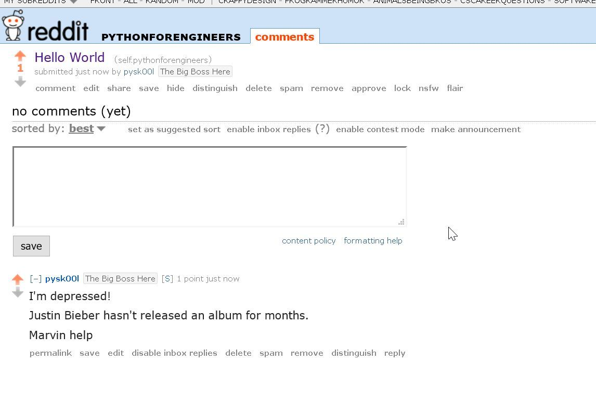
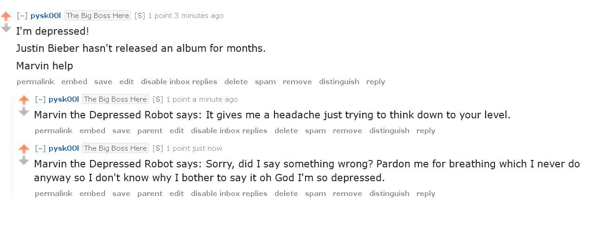

Build Marvin the Depressed Reddit Bot in Python

Part 1: Read posts from reddit
Part 4: Marvin the Depressed Bot
There are many bots on Reddit (and Twitter etc), most of whom are very helpful.
There is one bot that reminds of you something; another transcribes xkcd comic strips.
Our bot is not going to be like that. Our bot will be a depressed loner who will reply to your plea for help with more insults.
Introducing Marvin the Depressed Robot:

The theory behind bots: Most bots on reddit follow the same formula: They scan for a keyword in the comments, and reply based on a formula. We will follow this formula. To be insulted by get inspirational quotes from our bot, just add the words: Marvin help to your post.
Our script will continually monitor all new posts, and when it sees Marvin help, it will jump into action.
Prerequisites: Make sure you have done Parts 1 & 2 of the tutorial. Part 3 isn’t necessary, as this blog will try a new approach.
IMPORTANT: I created a special sub-Reddit for this series. Please please please stick to that. I don’t want you spamming other Reddits. The moderators may ban you, and Reddit may ban my user agent (please read part one if you don’t know what that means). So please stick to practising here:
https://www.reddit.com/r/pythonforengineers
This is my own sub-Reddit, and you have full permission to play in that region.
Before we start, all the source code is here.
Build Our Bot
The first thing to do is to get some sarcastic Marvin quotes. Imdb is a good source.
# Quotes taken from: https://www.imdb.com/character/ch0007553/quotes
marvin_quotes = \
[
" I've calculated your chance of survival, but I don't think you'll like it. ",
" Do you want me to sit in a corner and rust or just fall apart where I'm standing?",
"Here I am, brain the size of a planet, and they tell me to take you up to the bridge. Call that job satisfaction? Cause I don't. ",
"Here I am, brain the size of a planet, and they ask me to pick up a piece of paper. ",
" It gives me a headache just trying to think down to your level. ",
" You think you've got problems. What are you supposed to do if you are a manically depressed robot? No, don't even bother answering. I'm 50,000 times more intelligent than you and even I don't know the answer.",
"Zaphod Beeblebrox: There's a whole new life stretching out in front of you. Marvin: Oh, not another one.",
"The first ten million years were the worst. And the second ten million... they were the worst too. The third ten million I didn't enjoy at all. After that, I went into a bit of a decline. ",
"Sorry, did I say something wrong? Pardon me for breathing which I never do anyway so I don't know why I bother to say it oh God I'm so depressed. ",
" I have a million ideas, but, they all point to certain death. ",
]
Let’s create our Reddit bot and point it to our sub-reddit:
reddit = praw.Reddit('bot1')
subreddit = reddit.subreddit("pythonforengineers")
Now we come to the crux of the code.
PRAW added this feature fairly recently, the ability to iterate over all new posts in a subreddit. In their official example, they show you how to track new posts. This method is called monitoring the submission stream, and it does so indefinitely.
We are going to do something slightly different and monitor all new replies to posts.
for comment in subreddit.stream.comments():
This line will continually monitor all new comments on every single post in the sub-reddit. It will run forever until you press Ctrl+C to kill the program.
if re.search("Marvin Help", comment.body, re.IGNORECASE):
We search for our keyword Marvin help in every single comment’s body. If we find it:
marvin_reply = "Marvin the Depressed Robot says: " + random.choice(marvin_quotes)
comment.reply(marvin_reply)
We choose a random quote from Marvin, and use the comment.reply() to reply to the message.
Let’s test our bot.
We create an empty post with a call to help to Marvin:

Let’s run our bot now.
$ python marvin_bot.py
I'm depressed!
Justin Bieber hasn't released an album for months.
Marvin help
Marvin the Depressed Robot says: It gives me a headache just trying to think down to your level.
Go to the subreddit page:
